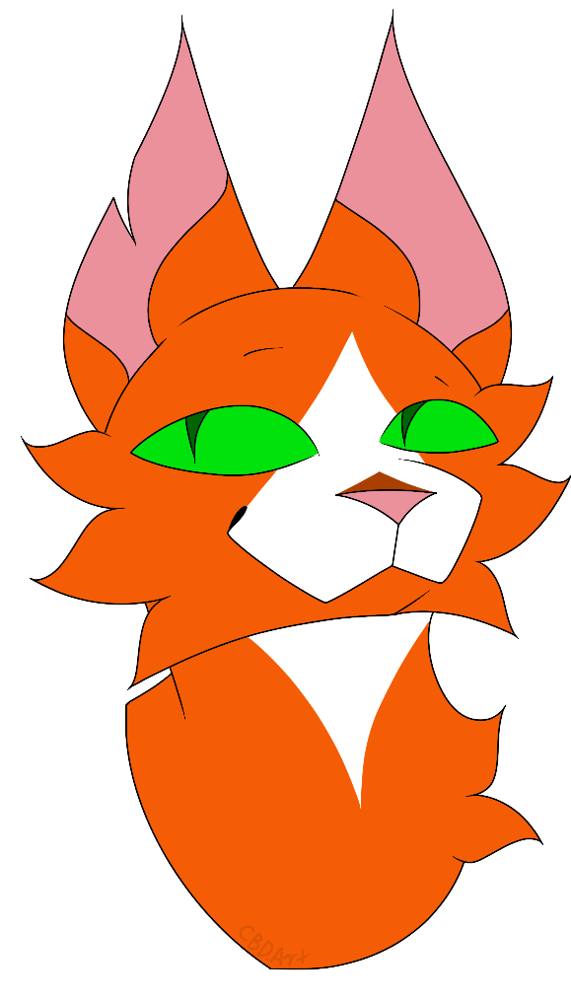

Warriors: Special Editions, Lost Books, The First App and More
What is Warriors?
'Warriors' is a book series that began in 2003, written by multiple authors under the name of Erin Hunter.
'Warriors' focuses on the cats of the Clans (ThunderClan, RiverClan, ShadowClan, WindClan, SkyClan and StarClan)
This series has been around for quite a while, and there are multiple books that are very rare to come across today.

Main Series
Currently, there are eight arcs in the main series, and a ninth has been confirmed. Each arc has six books
- 'The Prophecies Begin' (2003)
- 'The New Prophecy' (2005)
- 'Power of Three' (2007)
- 'Omen of the Stars' (2009)
- 'A Vision of Shadows' (2016)
- 'The Broken Code' (2019)
- 'A Starless Clan' (2022)
- 'Changing Skies' (yet to release, 2025)
- 'Dawn of the Clans' (set before the events of the main series, 2013)
Super Editions
As of 2024, there are sixteen super editions that have been published, with the seventeenth coming sometime this year and an eighteenth announced for 2025.
'Firestar's Quest' (2007)
'Bluestar's Prophecy' (2009)
'SkyClan's Destiny' (2010)
'Crookedstar's Promise' (2011)
'Yellowfang's Secret' (2012)
'Tallstar's Revenge' (2013)
'Bramblestar's Storm' (2014)
'Moth Flight's Vision' (2015)
'Hawkwing's Journey' (2016)
'Tigerheart's Shadow' (2017)
'Crowfeather's Trial' (2018)
'Squirrelflight's Hope' (2019)
'Graystripe's Vow' (2020)
'Leopardstar's Honour' (2021)
'Onestar's Confession' (2022)
'Riverstar's Home' (2023)
'Ivypool's Heart' (yet to release, 2024)
Novellas
The novellas are similar to the super editions, as they are stories that focus on one particular character. However, these books are much shorter, and can only be found in groups of three if bought physically. There are currently twenty one novellas.
'The Untold Stories': 'Hollyleaf's Story', 'Mistystar's Omen' and 'Cloudstar's Journey' (2013)
'Tales from the Clans': 'Tigerclaw's Fury', 'Leafpool's Wish' and 'Dovewing's Silence' (2014)
'Shadows of the Clans': 'Mapleshade's Vengeance', 'Goosefeather's Curse' and 'Ravenpaw's Farewell' (2016)
'Legends from the Clans': 'Spottedleaf's Heart', 'Pinestar's Choice' and 'Thunderstar's Echo' (2017)
'Path of a Warrior': 'Redtail's Debt', 'Tawnypelt's Clan' and 'Shadowstar's Life' (2019)
'A Warrior's Spirit': 'Pebbleshine's Kits', 'Tree's Roots' and 'Mothwing's Secret' (2020)
'A Warrior's Choice': 'Blackfoot's Reckoning', 'Daisy's Kin' and 'Spotfur's Rebellion' (2021)
Graphic novels and Mangas
The graphic novels and novellas are comics that further expand on the world of 'Warriors', and tells different stories as opposed to what we see in the main books. Most of the mangas are split up into three parts, which can be brought either seperately or all together. Otherwise, they are just standalone stories.
'Graystripe's Adventure' ('The Lost Warrior', 'Warrior's Refuge' and 'Warrior's Return') (2007)
'Tigerstar and Sasha': 'Into the Woods', 'Escape from the Forest' and 'Return to the Clans' (2008)
'Ravenpaw's Path': 'Shattered Peace', 'A Clan in Need' and 'The Heart of a Warrior' (2009)
'SkyClan and the Stranger': 'The Rescue', 'Beyond the Code' and 'After the Flood' (2011)
'The Rise of Scourge' (2008)
The graphic novels are different to the mangas, as they are standalone stories that aren't split up into three different parts. There are currently four available graphic novels.
'A Shadow in RiverClan (2020)'
'Winds of Change' (2021)
'Exile from ShadowClan' (2022)
'A Thief in ThunderClan' (2023)
There will also be a graphic novel adaptation of all six books in 'The Prophecies Begin'. These books are not out yet, though it is set to release in 2024.